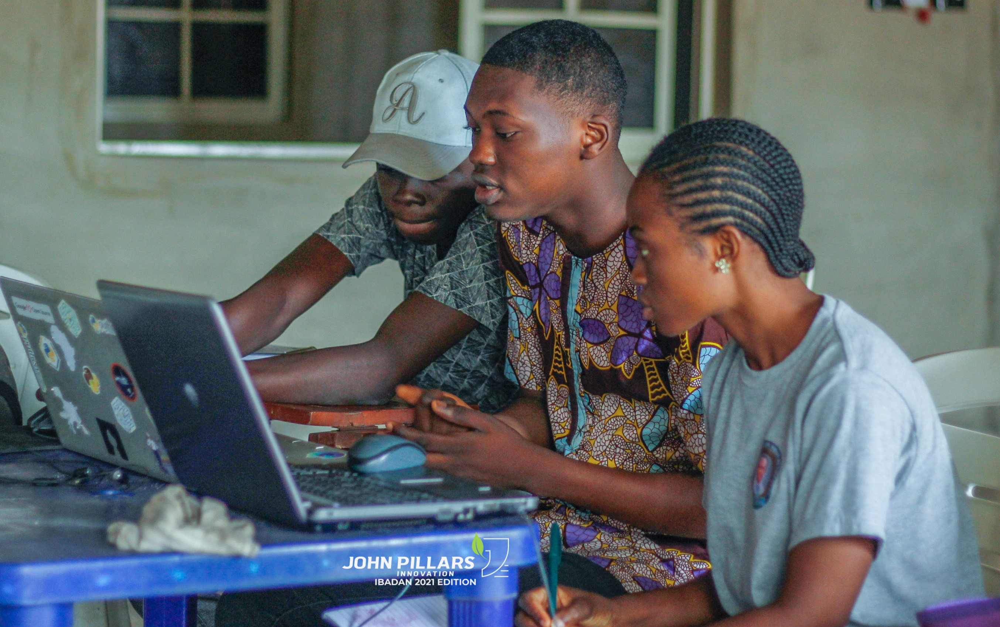
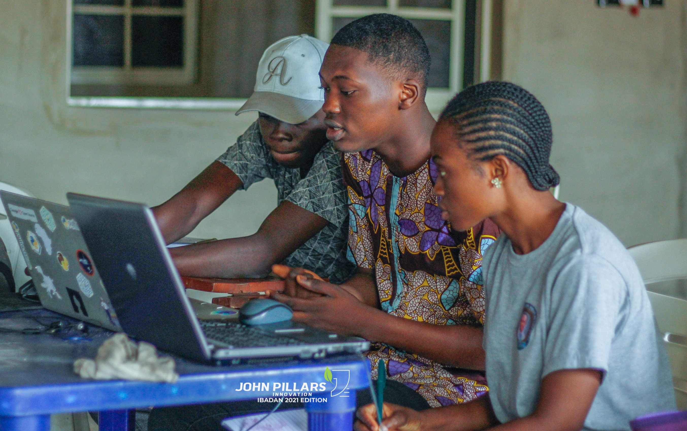
 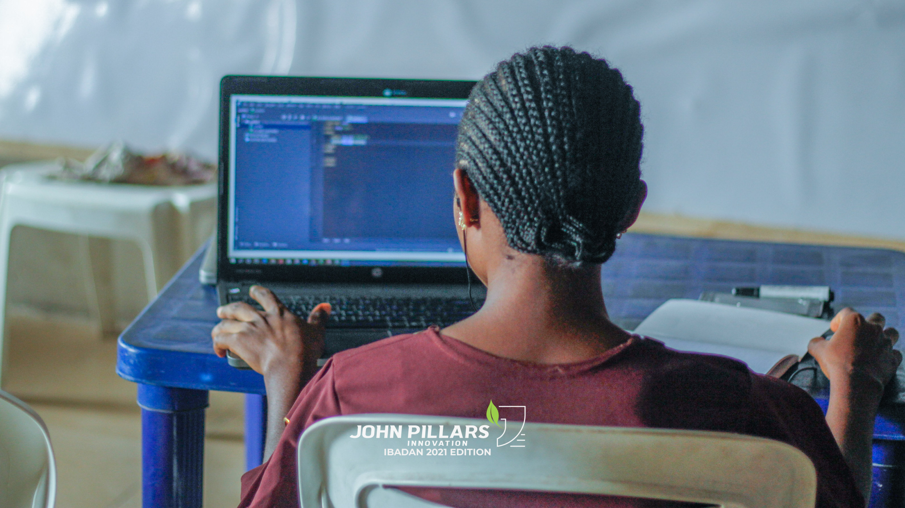
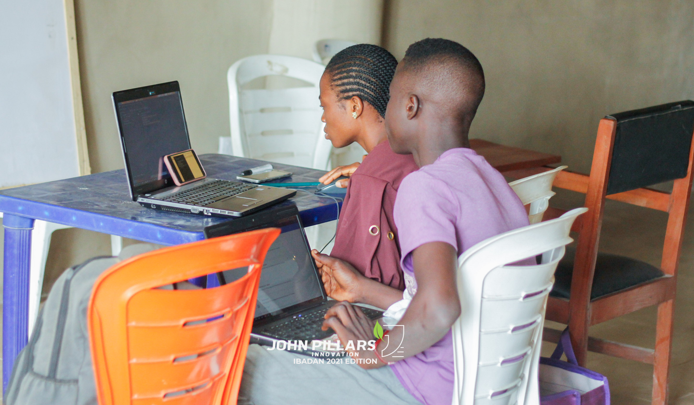
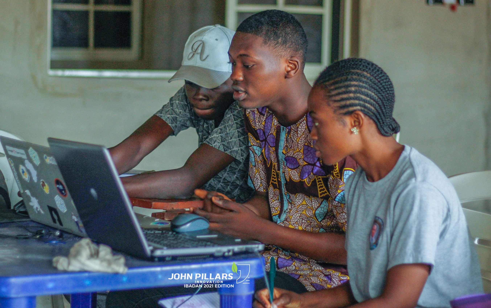
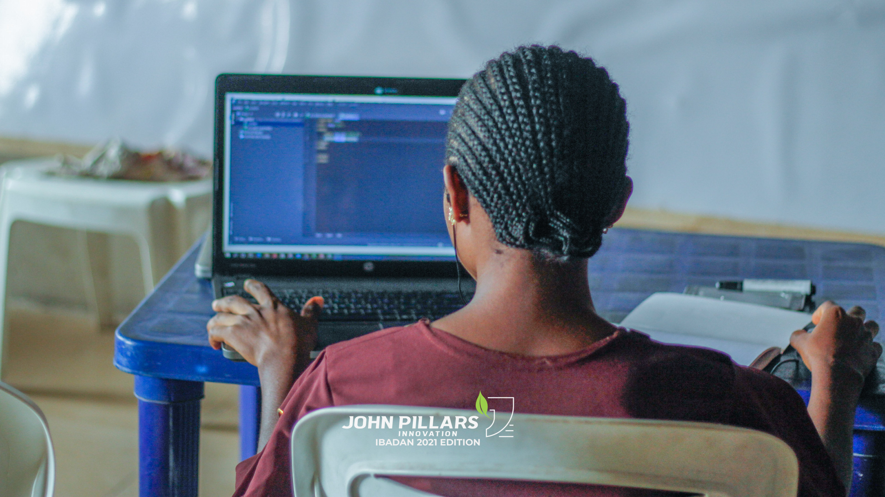
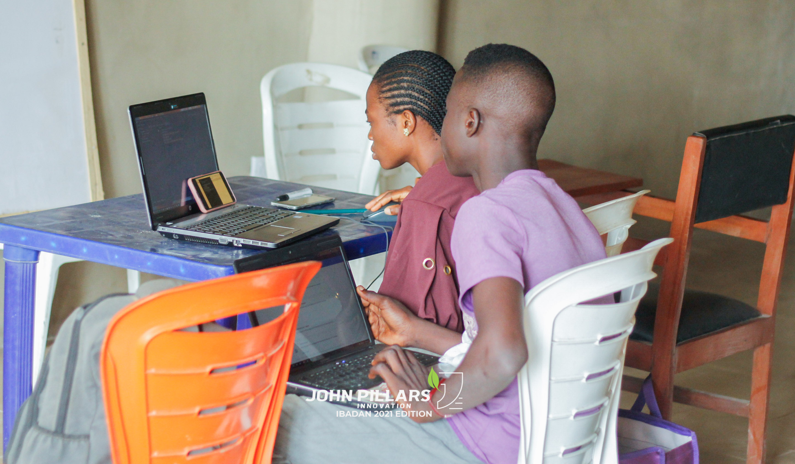
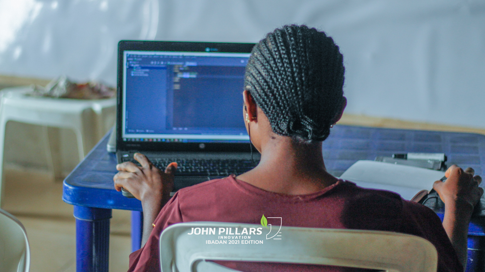
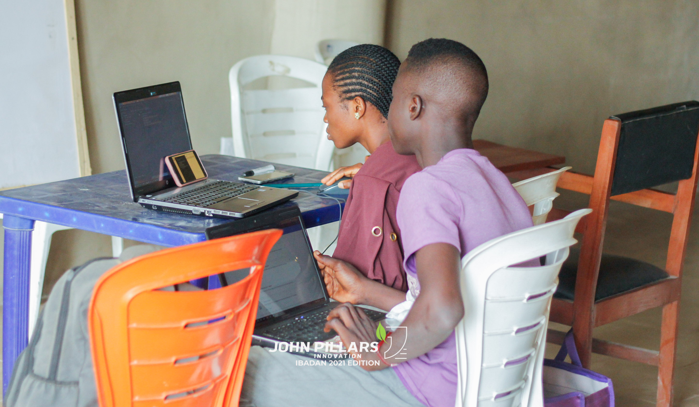
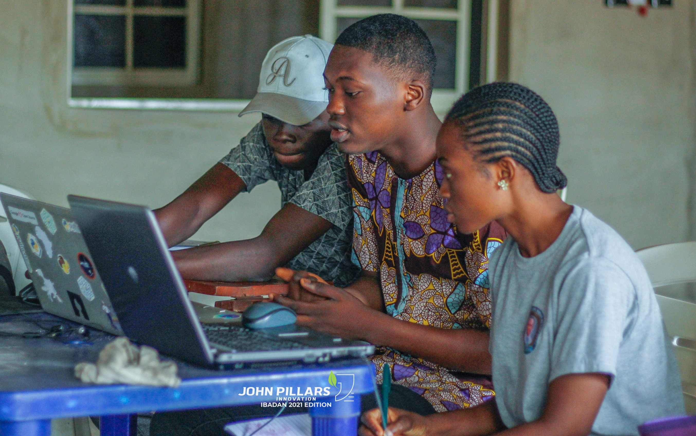
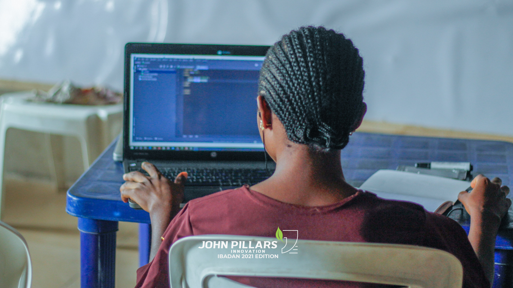
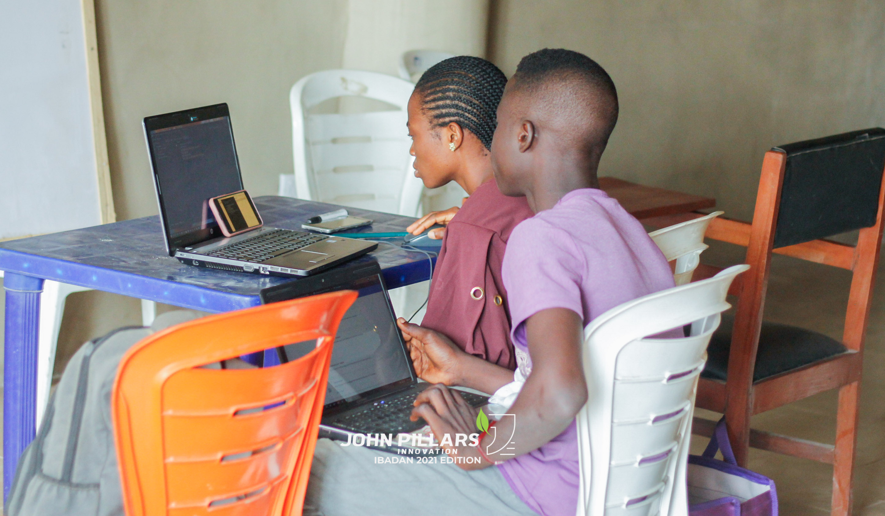
What is web development?
From the word development which means building creating things, development is the process building of a web platform through different programming languages.
From the training, what have you learnt about being a web developer?
From the class we learnt that Tech is the future of work, and being a web developer is core in the sphere of business today. Every businesses needs a web developer in order to provide their services to a wide range of people.
What have been your challenges in the training?
Our major challenge is unavailability of uninterrupted internet facility and electricity.
What have you learnt during this training?
What is your advice for John Pillars?
-JPI should expand her tentacles by reaching out to more people before each training.
-JPI should also ensure that more facilities and facilitators available on site.
Oluwasomidotun Oladipupo-Tutor